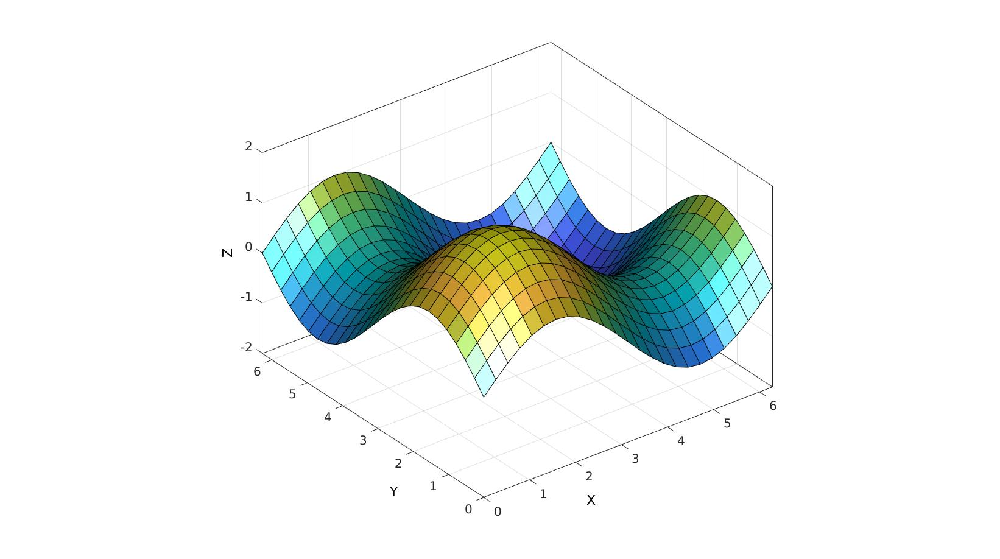
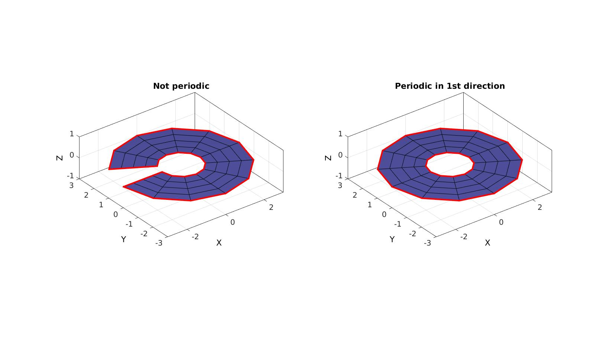
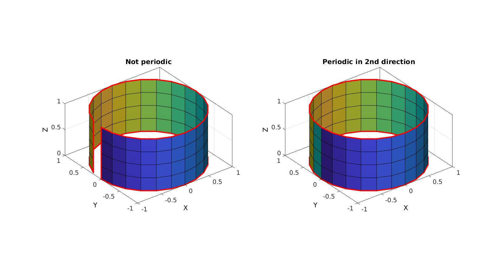
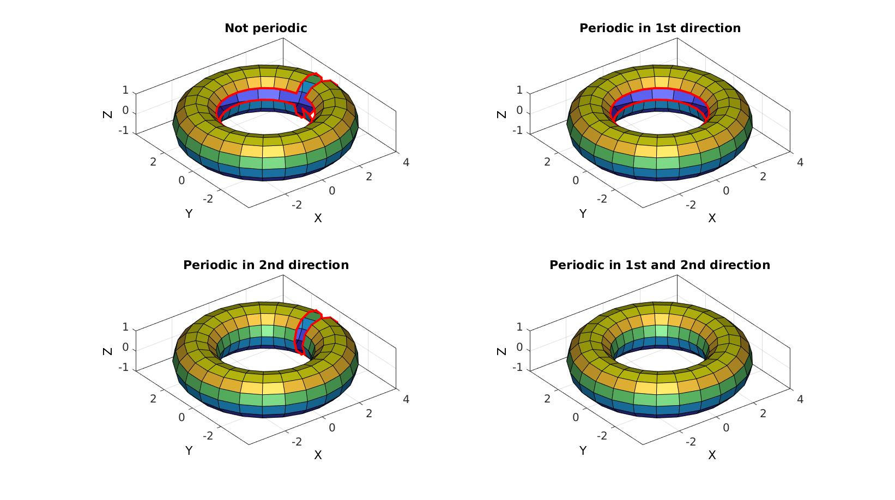

grid2patch
Below is a demonstration of the features of the grid2patch function
Contents
clear; close all; clc;
Syntax
[F,V,C]=grid2patch(X,Y,Z,C,perdiocOpt);
Description
This function generates patch data for gridded surface coordinates defined by X,Y,Z (e.g. as produced by functions like meshgrid or ndgrid). Optional inputs include the color data C (a color for each vertex), perdiocOpt (a 1x2 logic) which sets periodicity of the surface in the first or second direction. Similar to MATLAB's surf2patch function (which does not include periodic connectivity).
Examples
Plot settings
cMap=gjet(250); fontSize=15;
Example: Converting gridded surface data to patch data
[X,Y]=ndgrid(linspace(0,2*pi,25)); Z=sin(X)+sin(Y);
Creating patch data for the cylinger
[F,V,C]=grid2patch(X,Y,Z,Z);
Visualizing outputs
cFigure; hold on; gpatch(F,V,C,'k'); axisGeom(gca,fontSize); camlight headlight; drawnow;
Example: periodicity in direction 1
n=12; t=linspace(-pi,pi,n+1); t=t(1:end-1); v1=[cos(t(:)) sin(t(:)) zeros(size(t(:))) ]; v2=3*v1; %Get coordinate matrices m=5; X=linspacen(v1(:,1),v2(:,1),m); Y=linspacen(v1(:,2),v2(:,2),m); Z=linspacen(v1(:,3),v2(:,3),m); %Collect node set VN=[X(:) Y(:) Z(:)]; numSteps=n-1;
Creating patch data for the cylinger
[F1,V1]=grid2patch(X,Y,Z,[],[0 0]); %Not periodic [F2,V2]=grid2patch(X,Y,Z,[],[1 0]); %Periodic in first direction
Visualizing outputs
cFigure; subplot(1,2,1); hold on; title('Not periodic') gpatch(F1,V1,'bw','k'); gpatch(patchBoundary(F1,V1),V1,'none','r',1,3); axisGeom(gca,fontSize); camlight headlight; subplot(1,2,2); hold on; title('Periodic in 1st direction') gpatch(F2,V2,'bw','k'); gpatch(patchBoundary(F2,V2),V2,'none','r',1,3); axisGeom(gca,fontSize); camlight headlight; drawnow;
Example: periodicity in direction 2
Creating an example of a cylinder
t=linspace(-pi,pi,25); t=t(1:end-1); [T,Z]=meshgrid(t,linspace(0,1,5)); [X,Y]=pol2cart(T,ones(size(T)));
Creating patch data for the cylinger
[F1,V1,C1]=grid2patch(X,Y,Z,T,[0 0]); %Not periodic [F2,V2,C2]=grid2patch(X,Y,Z,T,[0 1]); %Periodic in first direction
Visualizing outputs
cFigure; subplot(1,2,1); hold on; title('Not periodic') gpatch(F1,V1,C1,'k'); gpatch(patchBoundary(F1,V1),V1,'none','r',1,3); axisGeom(gca,fontSize); camlight headlight; subplot(1,2,2); hold on; title('Periodic in 2nd direction') gpatch(F2,V2,C2,'k'); gpatch(patchBoundary(F2,V2),V2,'none','r',1,3); axisGeom(gca,fontSize); camlight headlight; drawnow;
Example: periodicity in both directions
Creating an example of a cylinder
n=12; m=25; t=linspace(-pi,pi,n+1); t=t(1:end-1); v=[cos(t(:)) zeros(size(t(:))) sin(t(:))]; v(:,1)=v(:,1)+3; a=linspace(0,2*pi,m+1); a=a(1:end-1); X=zeros(n,m); Y=zeros(n,m); Z=zeros(n,m); for q=1:1:m R=euler2DCM([0 0 a(q)]); vr=v*R; X(:,q)=vr(:,1); Y(:,q)=vr(:,2); Z(:,q)=vr(:,3); end
Creating patch data for the cylinger
[F1,V1,C1]=grid2patch(X,Y,Z,Z,[0 0]); %Not periodic [F2,V2,C2]=grid2patch(X,Y,Z,Z,[0 1]); %Periodic in first direction [F3,V3,C3]=grid2patch(X,Y,Z,Z,[1 0]); %Periodic in second direction [F4,V4,C4]=grid2patch(X,Y,Z,Z,[1 1]); %Periodic both directions
Visualizing outputs
cFigure; subplot(2,2,1); hold on; title('Not periodic') gpatch(F1,V1,C1,'k'); gpatch(patchBoundary(F1,V1),V1,'none','r',1,3); axisGeom(gca,fontSize); camlight headlight; subplot(2,2,2); hold on; title('Periodic in 1st direction') gpatch(F2,V2,C2,'k'); gpatch(patchBoundary(F2,V2),V2,'none','r',1,3); axisGeom(gca,fontSize); camlight headlight; subplot(2,2,3); hold on; title('Periodic in 2nd direction') gpatch(F3,V3,C3,'k'); gpatch(patchBoundary(F3,V3),V3,'none','r',1,3); axisGeom(gca,fontSize); camlight headlight; subplot(2,2,4); hold on; title('Periodic in 1st and 2nd direction') gpatch(F4,V4,C4,'k'); gpatch(patchBoundary(F4,V4),V4,'none','r',1,3); axisGeom(gca,fontSize); camlight headlight; drawnow;

GIBBON www.gibboncode.org
Kevin Mattheus Moerman, gibbon.toolbox@gmail.com
GIBBON footer text
License: https://github.com/gibbonCode/GIBBON/blob/master/LICENSE
GIBBON: The Geometry and Image-based Bioengineering add-On. A toolbox for image segmentation, image-based modeling, meshing, and finite element analysis.
Copyright (C) 2019 Kevin Mattheus Moerman
This program is free software: you can redistribute it and/or modify it under the terms of the GNU General Public License as published by the Free Software Foundation, either version 3 of the License, or (at your option) any later version.
This program is distributed in the hope that it will be useful, but WITHOUT ANY WARRANTY; without even the implied warranty of MERCHANTABILITY or FITNESS FOR A PARTICULAR PURPOSE. See the GNU General Public License for more details.
You should have received a copy of the GNU General Public License along with this program. If not, see http://www.gnu.org/licenses/.